Send an Email - IFTTT¶
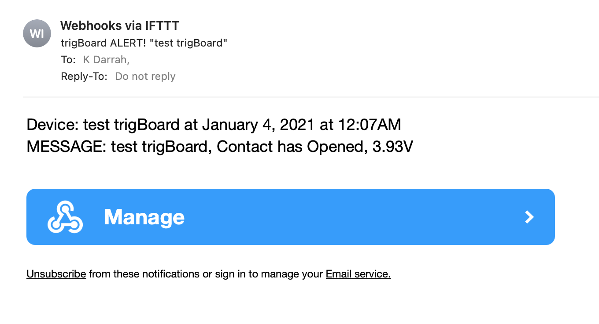Get an Email from the trigBoard! This is very simple with IFTTT, but you will need to obtain a free maker key - go to the Supported Services Page to set this up. Once you have the key, you can proceed with the following steps. Also note that you can use this as a “backup” notification, so receive a push notification as well as an email. Just enable any service you want and they’ll all fire off at once.
Create an Applet
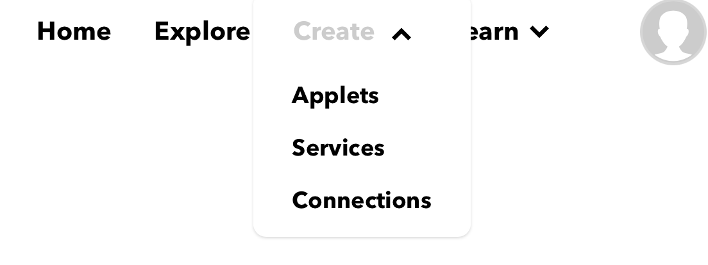Click Add
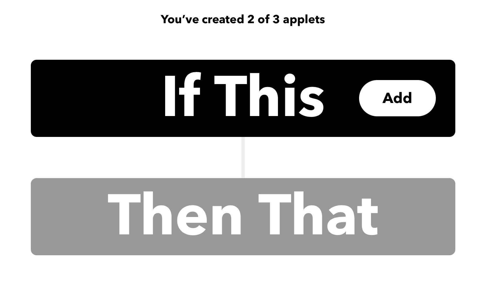Search for Webhooks

Select this
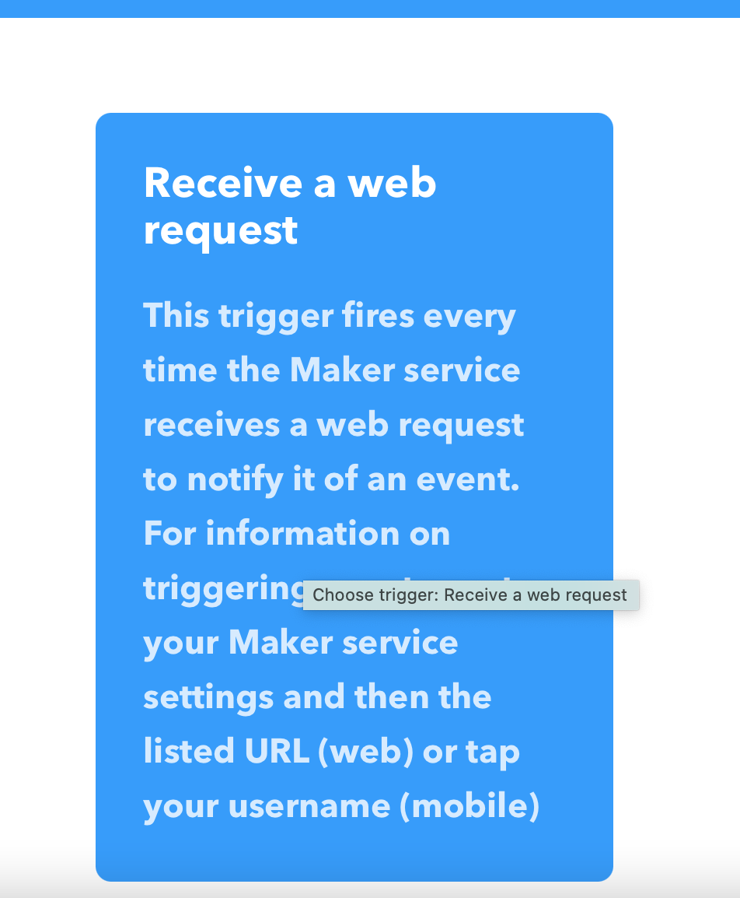This is important - the Event Name must Match the trigBoard Name you give in the Configurator
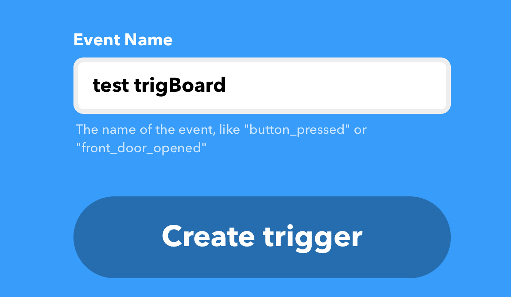“THAT” click Add
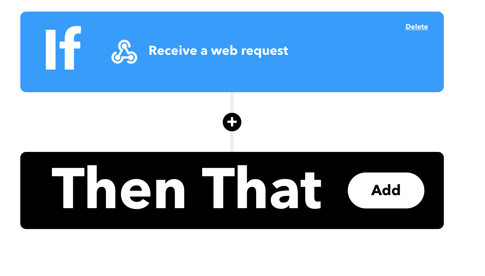Search Email
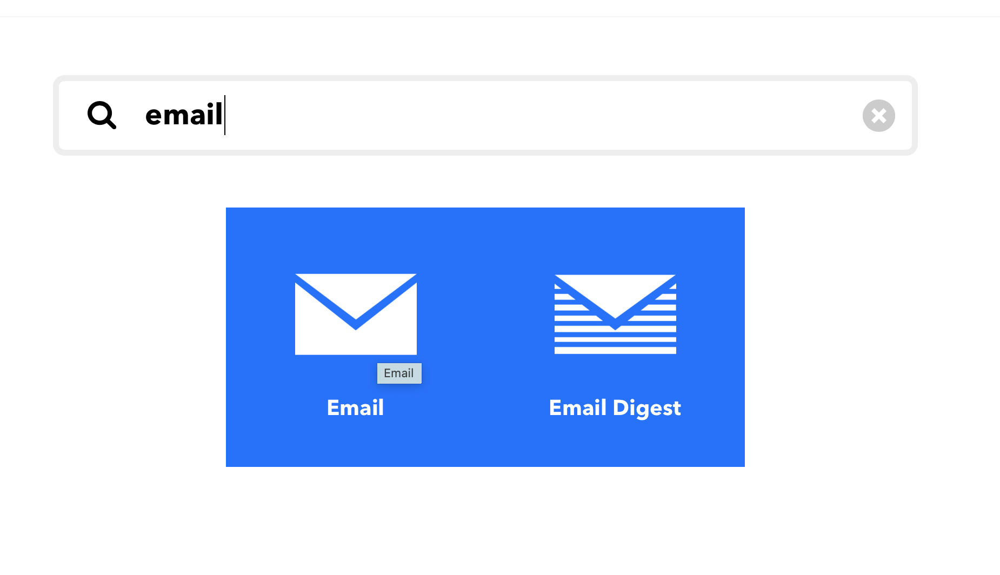Select the Email option
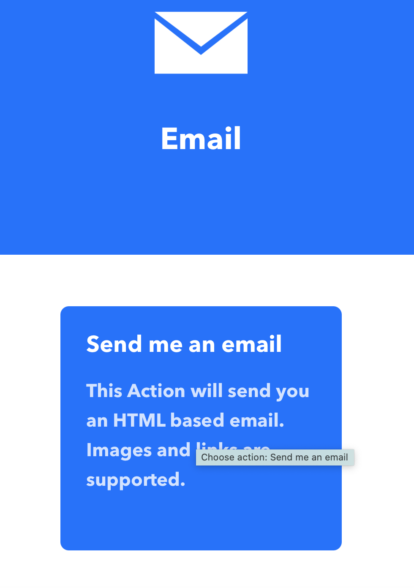Default Email Message - can leave this as-is for now
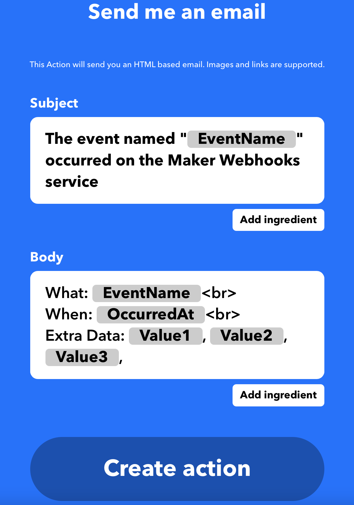Give your Applet a name and finish up
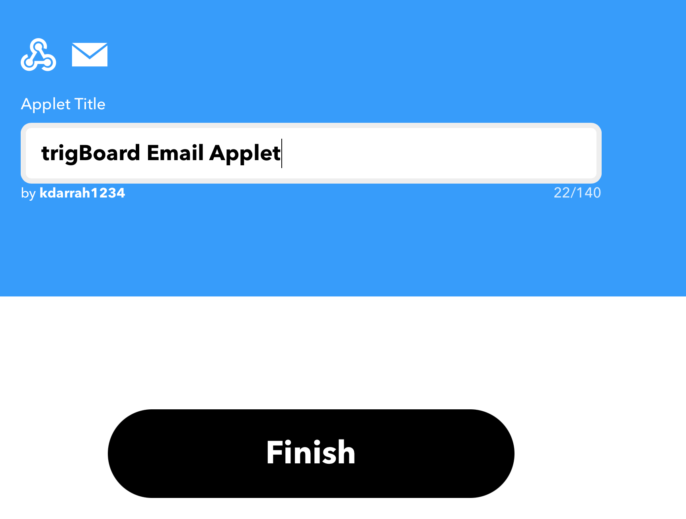Launch the Configurator and set things up, WiFi, IFTTT enabled and put your Maker Key in, and set the trigBoard name to the Event Name
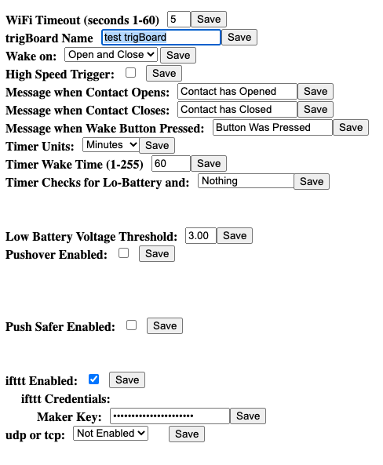Then test the trigBoard - you should get an Email that looks like this!
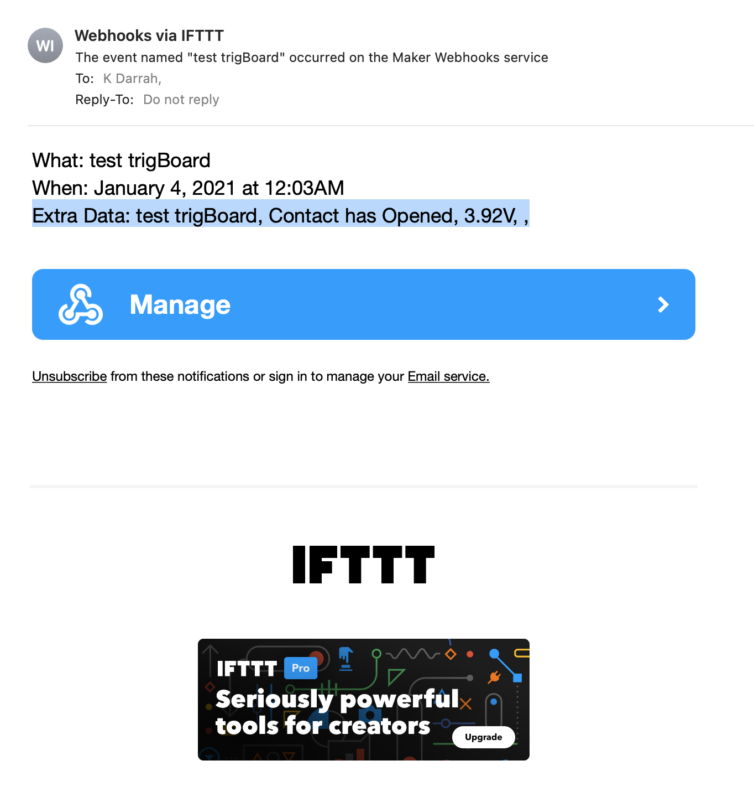You can go back into the Applet settings and change how the Email is sent, note that we don’t use Value3, so that can be deleted
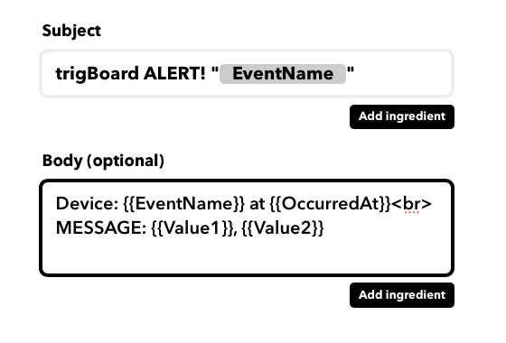And that comes out like this then